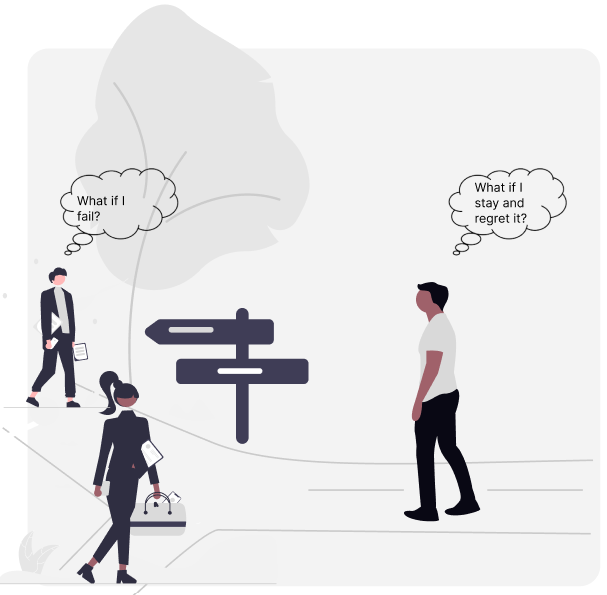
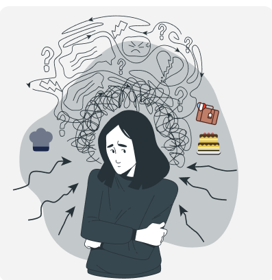
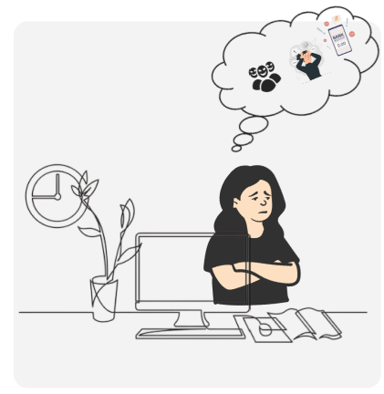
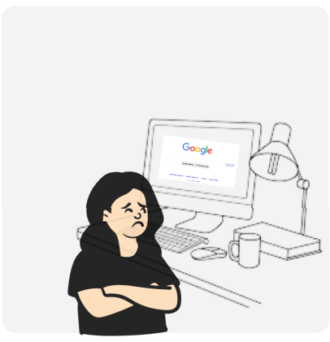
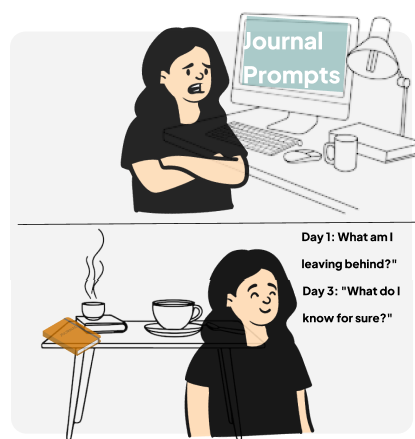
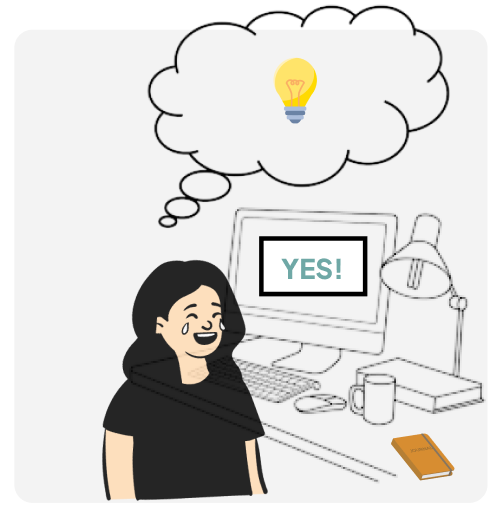
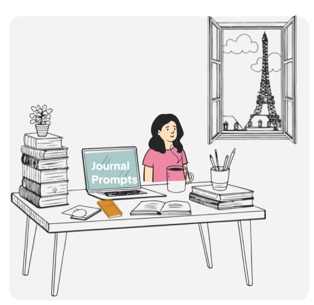

Storyboard · UX Research
Every day, we face decisions ranging from the small to the life-changing. These moments can lead to decision paralysis, leaving us frozen between fear and possibility. Research shows that open-ended journaling prompts can help people weigh options, identify barriers, and find clarity under uncertainty (Cook et al., 2018). This storyboard explores how a structured journaling system can support users through high-stakes decisions.
The Story — 7 Frames

The Setup
The stakes are rarely equal, but the weight of uncertainty feels the same.

Meet Noelle
Good at her job but dreaming of something more, she applied to a culinary program in Paris on a whim. She got in. Now she has to actually decide.

The Spiral
Noelle spirals through fears of judgment, financial instability, and starting completely from scratch in a city where she knows no one.

The Discovery
She finds a structured journaling tool built for moments like this. The first prompt: "What would staying cost you, not financially, but personally?"

The Shift
The evenings get quieter. The spiral slows.

The Turning Point
The prompt is "What would you regret not trying in 5 years?" She writes something that surprises her. She opens her email and types: Accepted.

The Beginning
The tool didn't just help her decide. It's helping her begin. Now a companion for the transition itself, the journaling system continues to support her through the uncertainty of starting over.
See the visual frames and design in the original Figma file.
Open in FigmaCook JM, Simiola V, McCarthy E, Ellis A, Wiltsey Stirman S. Use of Reflective Journaling to Understand Decision Making Regarding Two Evidence-Based Psychotherapies for PTSD: Practice Implications. Pract Innov (Wash D C). 2018 Sep;3(3):153-167.